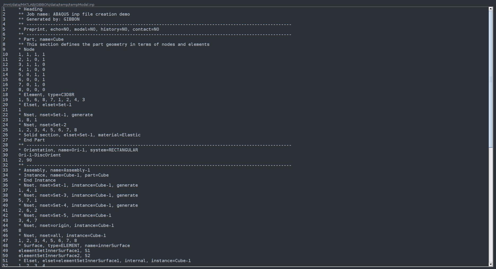

abaqusStruct2inp
Below is a demonstration of the features of the abaqusStruct2inp function
Contents
clear; close all; clc;
Syntax
[T]=abaqusStruct2inp(abaqus_spec,fileName,optionStruct);
Description
This function provides the basis for coding Abaqus .inp input files
See also: abaqusStructTemplate
About Abaqus INP input files
Abaqus input files (.inp) are plain text files.
Coding INP files in MATLAB
Specify file heading
Users may provide a heading which can be used to give a description of the input file.
% *Heading % ** Job name: ABAQUS inp file creation demo % ** Generated by: GIBBON abaqus_spec.Heading.COMMENT{1}='Job name: ABAQUS inp file creation demo'; abaqus_spec.Heading.COMMENT{2}='Generated by: GIBBON';
The preprint section
% *Preprint, echo=NO, model=NO, history=NO, contact=NO abaqus_spec.Preprint.ATTR.echo='NO'; abaqus_spec.Preprint.ATTR.model='NO'; abaqus_spec.Preprint.ATTR.history='NO'; abaqus_spec.Preprint.ATTR.contact='NO';
The part section
V=[ 1 1 1; 1 0 1; 1 1 0; 1 0 0; 0 1 1; 0 0 1; 0 1 0; 0 0 0]; nodeIds=(1:1:size(V,1))'; E=[5 6 8 7 1 2 4 3]; elementIds=(1:1:size(E,1))'; % Node abaqus_spec.Part{1}.COMMENT='This section defines the part geometry in terms of nodes and elements'; abaqus_spec.Part{1}.ATTR.name='Cube'; abaqus_spec.Part{1}.Node={nodeIds,V}; % Element abaqus_spec.Part{1}.Element{1}.ATTR.type='C3D8R'; abaqus_spec.Part{1}.Element{1}.VAL={elementIds,E}; %Element sets abaqus_spec.Part{1}.Elset{1}.ATTR.elset='Set-1'; abaqus_spec.Part{1}.Elset{1}.VAL=1; %Sections abaqus_spec.Part{1}.Solid_section.ATTR.elset='Set-1'; abaqus_spec.Part{1}.Solid_section.ATTR.material='Elastic';
The assembly section
abaqus_spec.Assembly.ATTR.name='Assembly-1'; abaqus_spec.Assembly.Instance.ATTR.name='Cube-assembly'; abaqus_spec.Assembly.Instance.ATTR.part='Cube'; abaqus_spec.Assembly.Nset{1}.ATTR.nset='Set-1'; abaqus_spec.Assembly.Nset{1}.ATTR.instance='Cube-assembly'; abaqus_spec.Assembly.Nset{1}.ATTR.generate=''; abaqus_spec.Assembly.Nset{1}.VAL=[1 4 1]; abaqus_spec.Assembly.Nset{2}.ATTR.nset='Set-3'; abaqus_spec.Assembly.Nset{2}.ATTR.instance='Cube-assembly'; abaqus_spec.Assembly.Nset{2}.ATTR.generate=''; abaqus_spec.Assembly.Nset{2}.VAL=[5 7 1]; abaqus_spec.Assembly.Nset{3}.ATTR.nset='Set-4'; abaqus_spec.Assembly.Nset{3}.ATTR.instance='Cube-assembly'; abaqus_spec.Assembly.Nset{3}.ATTR.generate=''; abaqus_spec.Assembly.Nset{3}.VAL=[2 6 2]; abaqus_spec.Assembly.Nset{4}.ATTR.nset='Set-5'; abaqus_spec.Assembly.Nset{4}.ATTR.instance='Cube-assembly'; abaqus_spec.Assembly.Nset{4}.VAL=[3 4 7]; abaqus_spec.Assembly.Nset{5}.ATTR.nset='origin'; abaqus_spec.Assembly.Nset{5}.ATTR.instance='Cube-assembly'; abaqus_spec.Assembly.Nset{5}.VAL=8; abaqus_spec.Assembly.Nset{6}.ATTR.nset='all'; abaqus_spec.Assembly.Nset{6}.ATTR.instance='Cube-assembly'; % abaqus_spec.Assembly.Nset{6}.ATTR.generate=''; abaqus_spec.Assembly.Nset{6}.VAL=[1:1:8];
The material section
*Material, name=Material-1 *Hyperelastic, neo hooke 0.03,1.
abaqus_spec.Material.ATTR.name='Neo-Hooke'; abaqus_spec.Material.Hyperelastic.VAL=[0.03 1]; abaqus_spec.Material.Hyperelastic.ATTR.neo_hooke=''; % abaqus_spec.Material.ATTR.name='Elastic'; % abaqus_spec.Material.Elastic=[0.5 0.49];
Orientation
% *Orientation, name=Ori-1, system=RECTANGULAR % Ori-1-DiscOrient % 2, 90. abaqus_spec.Orientation.ATTR.name='Ori-1'; abaqus_spec.Orientation.ATTR.system='RECTANGULAR'; abaqus_spec.Orientation.VAL=['Ori-1-DiscOrient' newline vec2strIntDouble([2 90],'%i')];
The step section
abaqus_spec.Step.ATTR.name='Step-1'; abaqus_spec.Step.ATTR.nlgeom='YES'; abaqus_spec.Step.Static=[0.1 1 1e-5 0.1]; % Boundary abaqus_spec.Step.Boundary{1}.VAL={'Set-1',[1 1],0.1}; abaqus_spec.Step.Boundary{2}.VAL={repmat({'origin'},3,1) [1 1; 2 2; 3 3]}; abaqus_spec.Step.Boundary{3}.VAL={'Set-3',[1,1]}; abaqus_spec.Step.Boundary{4}.VAL={'Set-4',[2,2]}; abaqus_spec.Step.Boundary{5}.VAL={'Set-5',[3,3]}; % Loads % ** LOADS % ** % ** Name: Load-1 Type: Pressure % *Dsload % Surf-1, P, 0.00533 % ** abaqus_spec.Step.Dsload{1}.VAL={'Surf-1','P',0.00533}; %Output abaqus_spec.Step.Restart.ATTR.write=''; abaqus_spec.Step.Restart.ATTR.frequency=0; abaqus_spec.Step.Output{1}.ATTR.field=''; abaqus_spec.Step.Output{1}.ATTR.variable='PRESELECT'; abaqus_spec.Step.Output{2}.ATTR.history=''; abaqus_spec.Step.Output{2}.ATTR.variable='PRESELECT'; abaqus_spec.Step.Node_print.ATTR.nset='all'; abaqus_spec.Step.Node_print.ATTR.frequency = 1; abaqus_spec.Step.Node_print.VAL='COORD'; abaqus_spec.Step.El_print.VAL='S'; % * NODE SET, set=yoursetname, frequency = 1 % U
Creating the INP file
You can use abaqusStruct2inp to write the structure data to a file.
%Create file name for INP file defaultFolder = fileparts(fileparts(mfilename('fullpath'))); savePath=fullfile(defaultFolder,'data','temp'); fileName=fullfile(savePath,'tempModel.inp'); [~,fileNamePart,~]=fileparts(fileName);
[T]=abaqusStruct2inp(abaqus_spec,fileName);
View the inp file
textView(fileName);

GIBBON www.gibboncode.org
Kevin Mattheus Moerman, gibbon.toolbox@gmail.com
GIBBON footer text
License: https://github.com/gibbonCode/GIBBON/blob/master/LICENSE
GIBBON: The Geometry and Image-based Bioengineering add-On. A toolbox for image segmentation, image-based modeling, meshing, and finite element analysis.
Copyright (C) 2019 Kevin Mattheus Moerman
This program is free software: you can redistribute it and/or modify it under the terms of the GNU General Public License as published by the Free Software Foundation, either version 3 of the License, or (at your option) any later version.
This program is distributed in the hope that it will be useful, but WITHOUT ANY WARRANTY; without even the implied warranty of MERCHANTABILITY or FITNESS FOR A PARTICULAR PURPOSE. See the GNU General Public License for more details.
You should have received a copy of the GNU General Public License along with this program. If not, see http://www.gnu.org/licenses/.